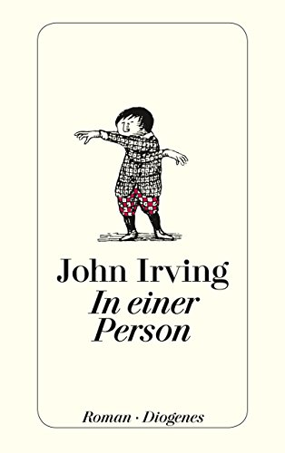
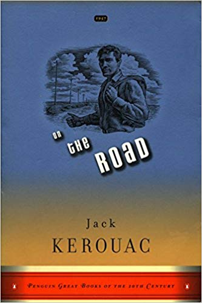
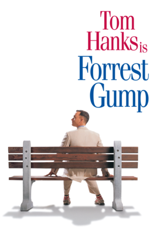
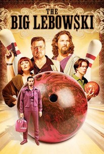
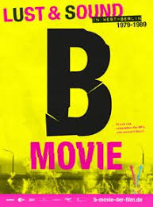

Master degree in political sciences and economics, fluent in foour languages (English, French, German, Spanish)
|  | In One PersonIn One Person is a 2012 novel by American author John Irving, his 13th since 1968. The book was published on May 8, 2012 by Simon & Schuster, and deals with the coming of age of a bisexual man and his coming to grips with his sexual identity. |
|  | On the RoadOn the Road is a novel by American writer Jack Kerouac, based on the travels of Kerouac and his friends across the United States. It is considered a defining work of the postwar Beat and Counterculture generations, with its protagonists living life against a backdrop of jazz, poetry, and drug use. |
Die DeutschstundeThe German Lesson (original title: Deutschstunde) is a novel by the German writer Siegfried Lenz, published in 1968 in Germany. Siggi Jepsen, an inmate of a juvenile detention center, is forced to write an essay with the title "The Joy of Duty." In the essay, Siggi describes his youth in Nazi Germany where his father, a police officer, does his duty, even when he is ordered to debar his old friend, the expressionist painter Max Nansen. |
|  | Forest GumpForrest Gump is a 1994 American comedy-drama film based on the 1986 novel of the same name by Winston Groom. It was directed by Robert Zemeckis and written by Eric Roth. The film stars Tom Hanks, Robin Wright, Gary Sinise, Mykelti Williamson, and Sally Field. The story depicts several decades in the life of Forrest Gump (Hanks), a slow-witted but kind-hearted man from Alabama who witnesses several defining historical events in the 20th century in the United States. |
|  | Big LebowskiThe Big Lebowski is a 1998 crime comedy film written, produced, and directed by Joel and Ethan Coen. It stars Jeff Bridges as Jeffrey "The Dude" Lebowski, a Los Angeles slacker and avid bowler. He is assaulted as a result of mistaken identity, after which The Dude learns that a millionaire also named Jeffrey Lebowski was the intended victim. The millionaire Lebowski's trophy wife is kidnapped, and he commissions The Dude to deliver the ransom to secure her release; but the plan goes awry... |
|  | B-Movie: Lust & Sound in West-Berlin 1979-1989Music, art and chaos in the wild West-Berlin of the 1980s. The walled-in city became the creative melting pot for sub- and pop-culture. Before the iron curtain fell, everything and anything seemed possible. B-MOVIE is a fast-paced collage of mostly unreleased film and TV footage from a frenzied but creative decade, starting with punk and ending with the Love Parade, in a city where the days are short and the nights are endless. Where it was not about long-term success, but about living for the moment - the here and now. |